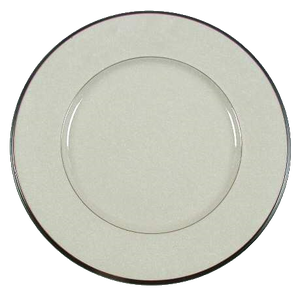
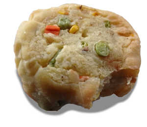

New York City, United States of America


Yonah Schimmel's Knish137 E Houston St, Lower East Side
Ubani Georgian
37 Bedford by Downing Street
37 Bedford by Downing Street
Ukrainian National Home
2nd Avenue between East 9th and St. Marks Place
2nd Avenue between East 9th and St. Marks Place
Lincoln Market, Lefferts Gardens
the BEST olive bar I've found in Brooklyn
the BEST olive bar I've found in Brooklyn